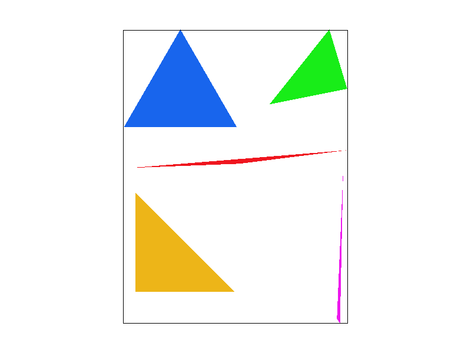
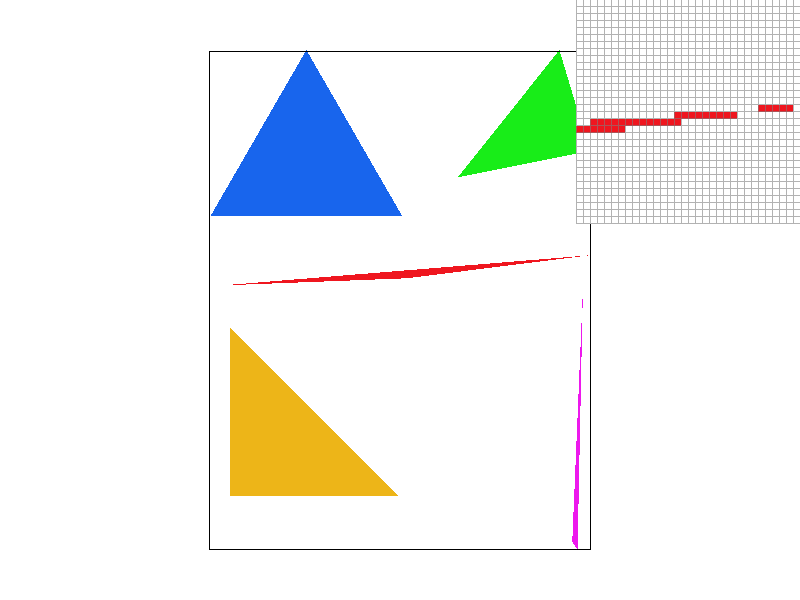
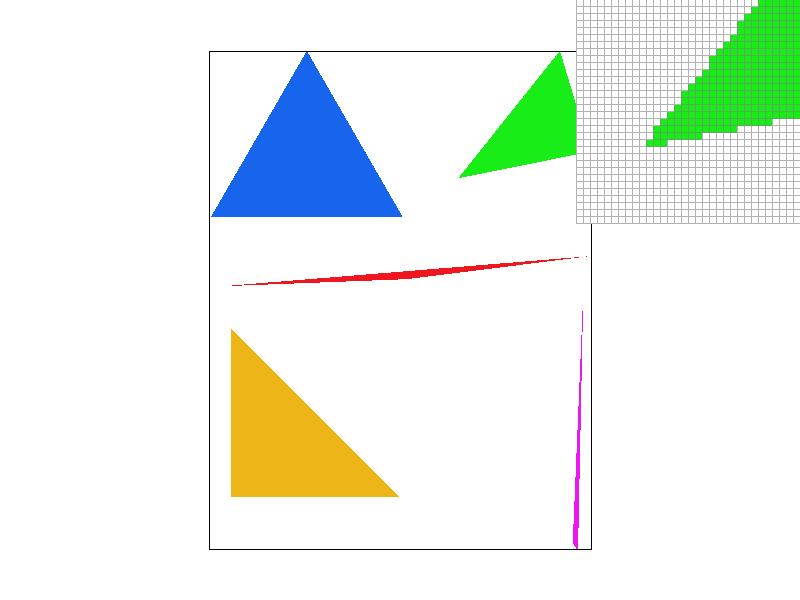
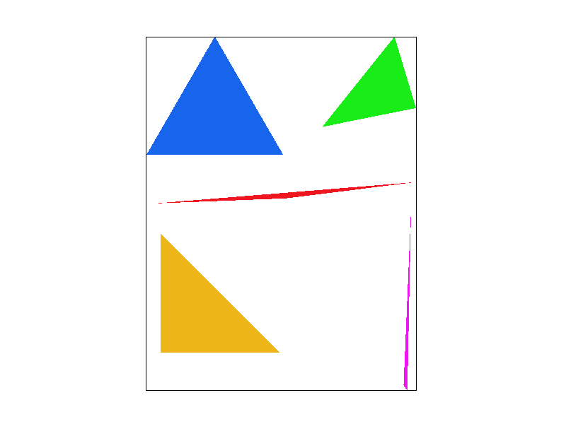
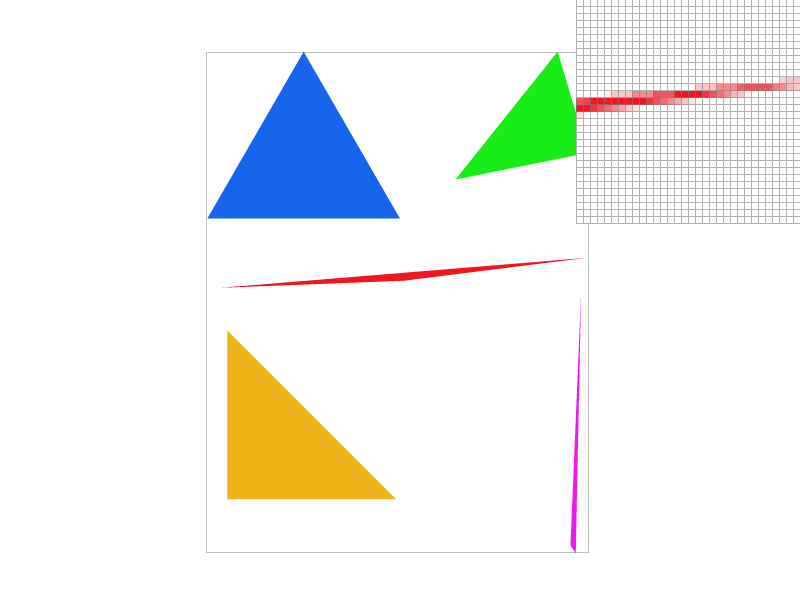

Overview
Give a high-level overview of what you implemented in this project. Think about what you've built as a whole. Share your thoughts on what interesting things you've learned from completing the project.
Section I: Rasterization
Part 1: Rasterizing single-color triangles
We rasterize triangles by using running the 3-Line Test on each point contained within the bounding box of the given triangle. First, we calculate the bounding box by finding the minimum/maximum for the x and y coordinates of the given points. We also calculate the slopes needed for the 3-Line test. Then we iterate through each point within the bounding box and run the 3-Line test. In order to ensure the triangle is able to be drawn regardless of the winding order of the verticies, we check all sides of the triangle, including whether the point is exactly on a line. If it passes the test, we call fill_pixel() to draw the point.
|

|

|
|

|

|
Part 2: Antialiasing triangles
Supersampling is important becauses it allows us to render more details to avoid artifacts like jaggies or disappearing lines.
To implement supersampling, we thought of it like "sampling a larger resolution image, then downsampling by averaging to the original resolution". We changed the size of our sample_buffer to sample_rate * width * height; for example, if we had a sample rate of 4, we would be sampling 4 times as many pixels. Because of this adjustment, we had to fix the implementations of other functions to account for the new sample_buffer size.
We first changed all calls to resize the frame buffer to take account the new sample_buffer size. We edited fill_pixel() to take into account the new frame buffer size by multiplying the width by sqrt(sample_size). We edited rasterize_point() to take account the new width and height when performing bounds check. For rasterize_line(), we had to scale the (x, y) coordinates by sqrt(sample_size), since we were sampling sqrt(sample_rate) * sqrt(sample_rate) more points. For rasterize triangle, we only needed to change the scaling of the 3 given (x, y) coordinates, the same way we changed rasterize_line(), by scaling by a factor of sqrt(sample_rate). This accounted for the adjustments made in the coordinates system.
The last thing we had to change in our rasterization pipeline was resolve_to_framebuffer(), which took the data stored in the upscaled sample_buffer, averaged sample_size pixels at a time, and stored the result of the averaged pixels on a corresponding entry of the output framebuffer. To implement this, we iterated over the width * height number of pixels, and for each pixel, we would iterate through sqrt(sample_size) * sqrt(sample_size) pixels using clever indexing. We averaged the color values at each pixel, and stored the result of each averaged pixel in the rgb_framebuffer_target.
|

|
|
|
|

|
Part 3: Transforms
Section II: Sampling
Part 4: Barycentric coordinates
Part 5: "Pixel sampling" for texture mapping
Part 6: "Level sampling" with mipmaps for texture mapping
Section III: Art Competition
If you are not participating in the optional art competition, don't worry about this section!